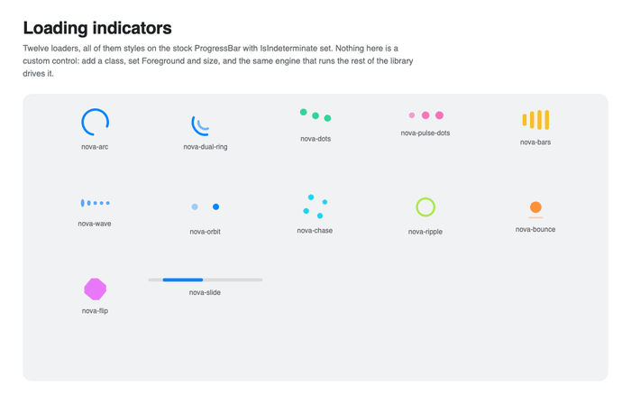

Packaged styles
Most of Nova does not require style registration. The package also includes optional styles for stock Avalonia controls so existing items, bindings, selection, keyboard navigation, and automation remain intact.
Theme resources
Register the tokens before styles that consume them:
<Application.Resources>
<ResourceDictionary>
<ResourceDictionary.MergedDictionaries>
<ResourceInclude Source="avares://Nova.Avalonia.Animations/Themes/NovaTokens.axaml" />
</ResourceDictionary.MergedDictionaries>
</ResourceDictionary>
</Application.Resources>
The resources are theme-aware and work with Avalonia's Fluent and Simple themes.
Selection styles
<Application.Styles>
<FluentTheme />
<StyleInclude Source="avares://Nova.Avalonia.Animations/Themes/Segmented.axaml" />
<StyleInclude Source="avares://Nova.Avalonia.Animations/Themes/Rail.axaml" />
<StyleInclude Source="avares://Nova.Avalonia.Animations/Themes/Dots.axaml" />
</Application.Styles>
| Style source | Control classes |
|---|---|
Segmented.axaml |
nova-segmented, nova-underlined on TabControl |
Rail.axaml |
nova-rail on ListBox |
Dots.axaml |
nova-dots on ListBox; add vertical for a vertical stack |
These styles use Motion.SlidingSelection to move one selection indicator between containers.
Loading indicators
Register Themes/Loaders.axaml, then apply the base nova class and one variant to an indeterminate ProgressBar.
<ProgressBar Classes="nova nova-arc" IsIndeterminate="True" />
<ProgressBar Classes="nova nova-dots" IsIndeterminate="True" Foreground="#34D399" />
<ProgressBar Classes="nova nova-wave" IsIndeterminate="True" />
Variants include nova-arc, nova-dual-ring, nova-dots, nova-pulse-dots, nova-bars, nova-wave, nova-orbit, nova-chase, nova-ripple, nova-bounce, nova-flip, and nova-slide.

Skeleton placeholders
Skeletons live in the shader package:
<StyleInclude Source="avares://Nova.Avalonia.Animations.Shaders/Themes/Skeletons.axaml" />
Use nova-skeleton on an indeterminate ProgressBar, optionally with card or circle.